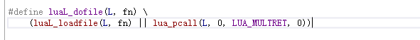
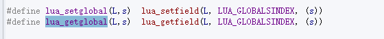
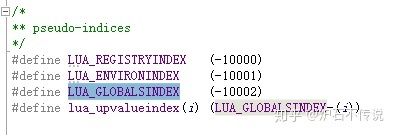
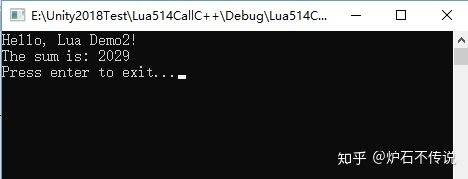
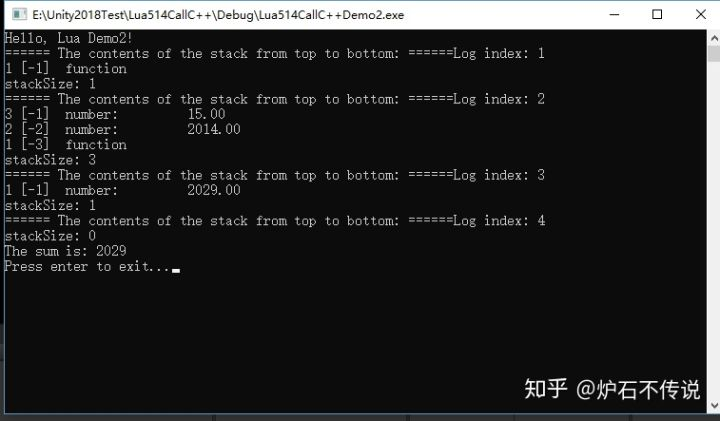

Home
上一篇文章中我们已经把测试环境搭建完毕了，接下来就用上次的项目工程进行代码测试和分析。
这篇文章主要讲在C++中怎么调用Lua中的函数add，并且把lua中函数计算结果返回给C++，然后在打印出来计算的结果。
一、直接上代码：
1、在Test.lua文件内添加如下代码：
print "Hello, Lua Demo2!"
function add(x,y)
return x + y
end
2、在LuaTest.cpp文件内添加如下代码：
#include <stdio.h>
extern "C" {
#include "lua.h"
#include "lualib.h"
#include "lauxlib.h"
}
lua_State* L;
int LuaAdd(int x,int y)
{
int sum;
//code5
lua_getglobal(L, "add");
//code6
lua_pushnumber(L, x);
//code7
lua_pushnumber(L, y);
//code8
lua_call(L, 2, 1);
//code9
sum = (int)lua_tointeger(L, -1);
//code10
lua_pop(L, 1);
return sum;
}
int main(int argc, char *argv[])
{
int sum;
//code1
L = lua_open();
//code2
luaL_openlibs(L);
//code3
luaL_dofile(L, "Test.lua");
//code4
sum = LuaAdd(2014, 15);
printf("The sum is: %d\n", sum);
//code11
lua_close(L);
printf("Press enter to exit...");
getchar();
return 0;
}
二、代码分析
code1，通过lua_open()函数来创建一个lua的虚拟机L。Tips：在5.2以及后续版本中已经被废弃，请使用新的函数luaL_newstate和lua_newstate。lua_newstate可自定义内存分配函数，luaL_newstate使用默认的内存分配方式。
code2，打开Lua中的所有标准库，如io库、string库等。
code3，luaL_dofile来加载和执行Test.lua脚本。参数是lua脚本的路径，由于我的lua文件就在工程根目录，所有直接写脚本名字就可以了。l
uaL_dofile函数的宏定义如下：
Tips：luaL_dofile函数实际上是执行了lua_load函数来加载lua文件，加载成功之后会编译一个代码块作为一个匿名函数放置在栈顶。然后调用lua_pcall执行匿名代码块，最终C代码才能调用lua中的函数和变量等等。
code4，是执行我们自己写的一个加法函数。里面封装里对lua的一些调用
code5，lua_getglobal是从全局表中找到add字段对应的数据并把它送入栈顶。
我们看一下lua_getglobal的定义，其实就是一个宏。
通过lua_getfield把字段s送入到栈中。可参考栈的运行图Log index 1

code6，lua_pushnumber把参数x的值压如栈中。
code7，lua_pushnumber把参数y的值压如栈中。此时栈内有三条数据了。最终站内的变化，可以参考栈的运行图Log index 2
code8，lua_call函数告诉lua虚拟机 L，它传入2个参数，需要返回1个值。这时候lua主程序开始把栈内的2个参数数据取出来，然后传入到函数add中。然后执行函数add，最后把计算出来的结果返回到栈顶。执行玩lua_call之后，栈内只剩下一个函数的返回值了。效果如栈的运行图Log index 3
code9，lua_tointeger是去栈顶取出返回值，然后复制给sum
code10，是一个宏，用于从虚拟栈中弹出指定数量的元素，这里的1表示仅弹出栈顶的元素。弹出一个元素之后，此时栈内没有数据了。参考栈的运行图Log index 4
code11，lua_close关闭当前虚拟L，并释放L所占用的动态内存。
三、运行结果如下图
四、程序运行时栈内的变化情况如下图：
项目测试源码地址在第一篇文章末尾：炉石不传说：一、搭建C++调用Lua环境
如果你感觉这篇文章对你有用，请随手点赞或评论，你的点赞操作可以让更多想学习的人更容易找到这篇文章，谢谢！